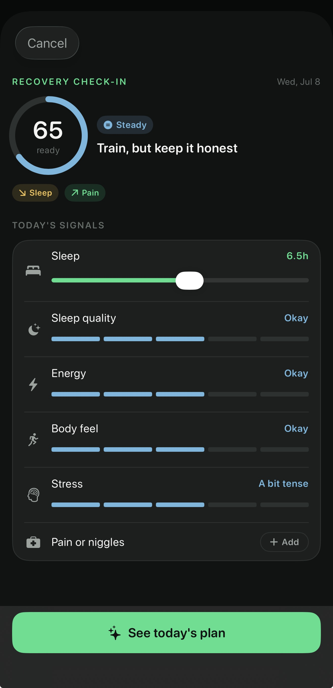
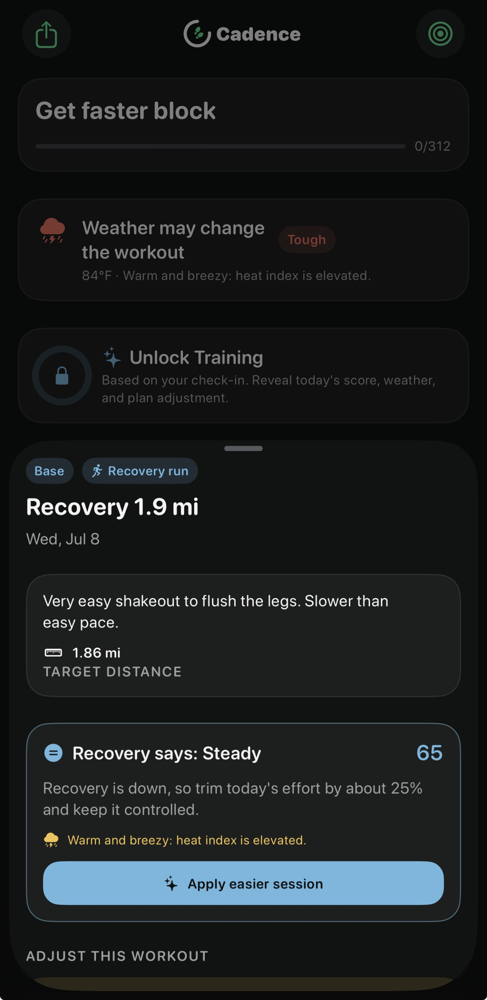
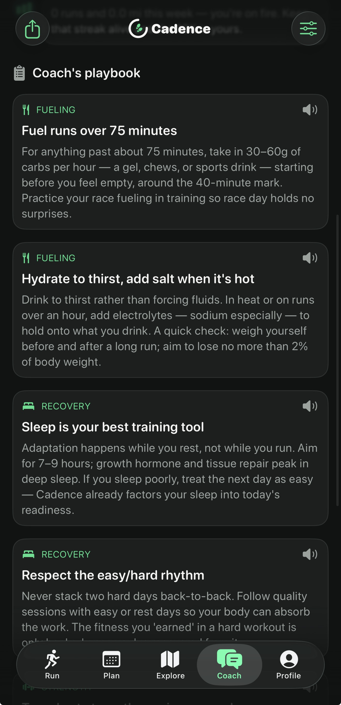
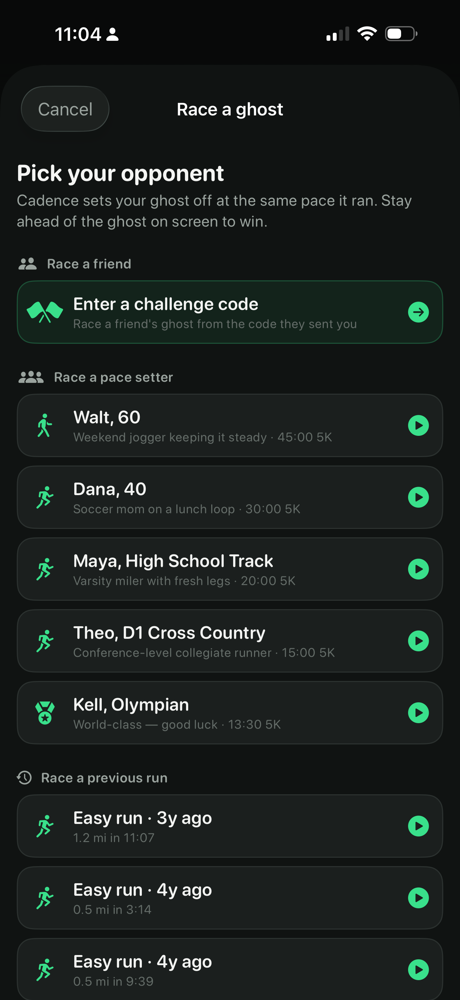
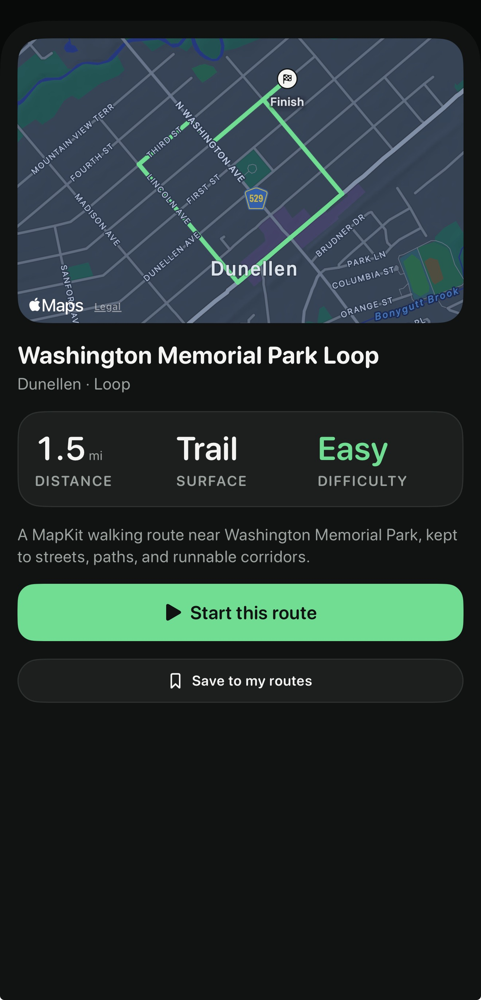
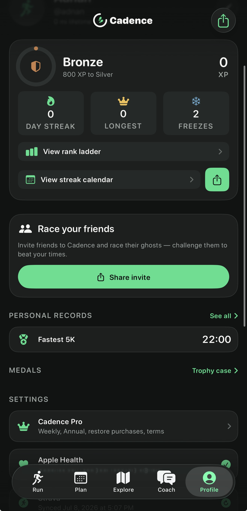

Set a run alarm, prove you laced up, and earn your apps back by completing a real outdoor run. Cadence turns your phone into the push you need to stay consistent — and the coach you need to get faster.
Accountability and adaptive coaching, built by collegiate runners.

Choose when you’ll run and which distracting apps Cadence should hold until the work is done.
When the alarm goes off, show Cadence you’re ready. One quick check turns intention into action.
Complete a verified outdoor run to unlock your apps. No willpower games — just real miles.
Cadence builds your training around your goal, then adapts as your fitness, recovery, and life change. You always know what to run next — and why it matters.

A quick check-in turns your sleep, energy, soreness, and stress into a readiness score. Cadence uses it to keep today’s run productive without pushing past what your body can handle.
Ask Cadence about pacing, soreness, fueling, hydration, race prep, or recovery and get practical guidance built for runners — whenever you need it.

See predicted race times as your fitness grows, then test yourself against a target pace, a friend, or a faster version of you.

Find loops and trails that match your target distance, or draw your own. See the surface and difficulty before you head out.

Build streaks, climb progress ranks, set personal records, and earn medals. Every completed run moves you forward.

Try Cadence Pro free for 3 days on the annual plan. Your accountability coach starts now.
A full year of accountability, adaptive training, and coaching.
Start 3-day free trialYou set a run alarm and choose the apps you want held. When it’s time to run, Cadence asks you to prove you laced up, then verifies that you completed a real outdoor run before giving your apps back.
Cadence uses your iPhone to track a real outdoor run. You don’t need a watch or extra gear — just your phone and your running shoes.
Both. Whether you’re building your first running habit or chasing a new PR, Cadence adjusts the plan, accountability, and coaching to your level and goal.
The annual plan starts with a 3-day free trial. You won't be charged until it ends, and you can cancel anytime from the App Store before then.
You get adaptive training plans, recovery check-ins, on-demand coaching, race-time predictions, routes, progress ranks, streaks, personal records, medals, and more.
Set your first run alarm, earn your apps back, and start building the consistency that makes you faster.
Download on the App Store